The original, as published: Tony R. Kuphaldt, Lessons In Industrial Instrumentation, Self-regulating and integrating processes. CC BY 4.0, https://creativecommons.org/licenses/by/4.0/. Imported as published, from https://www.ibiblio.org/kuphaldt/socratic/sinst/book/liii.pdf https://www.ibiblio.org/kuphaldt/socratic/sinst/book/liii.pdf
If a liquid flow-control valve is opened in a step-change fashion, flow through the pipe tends to self-stabilize at a new rate very quickly. The following illustration shows a typical liquid flow-control installation, with a process trend showing the flow response following a manual-mode (also known as “open-loop”) step-change in valve position:
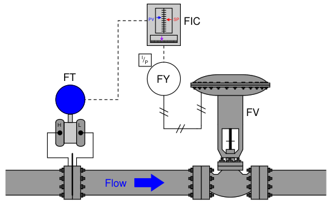
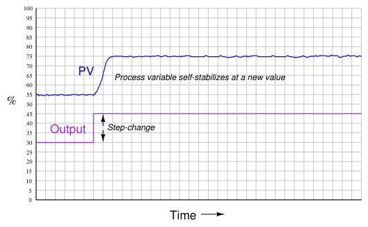
The defining characteristic of a self-regulating process is its inherent ability to settle at a new process variable value without any corrective action on the part of the controller. In other words, a self-regulating process will exhibit a unique process variable value for each possible output (valve) value. The inherently fast response of a liquid flow control process makes its self-regulating nature obvious: the self-stabilization of flow generally takes place within a matter of seconds following the valve’s motion. Many other processes besides liquid flow are self-regulating as well, but their slow response times require patience on the part of the observer to tell that the process will indeed self-stabilize following a step-change in valve position. A corollary to the principle of self-regulation is that a unique output value will be required to achieve a new process variable value. For example, to achieve a greater flow rate, the control valve must be opened further and held at that further-open position for as long as the greater flow rate is desired. This presents a fundamental problem for a proportional-only controller. Recall the formula for a proportional-only controller, defining the output value (m) by the error (e) between process variable and setpoint multiplied by the gain (Kp) and added to the bias (b):
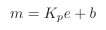
Where, m = Controller output e = Error (difference between PV and SP) Kp = Proportional gain b = Bias
Suppose we find the controller in a situation where there is no error (PV = SP), and the flow rate is holding steady at some value. If we then increase the setpoint value (calling for a greater flow rate), the error will increase, driving the valve further open. As the control valve opens further, flow rate naturally increases to match. This increase in process variable drives the error back toward zero, which in turn causes the controller to decrease its output value back toward where it was before the setpoint change. However, the error can never go all the way back to zero because if it did, the valve would return to its former position, and that would cause the flow rate to self-regulate back to its original value before the setpoint change was made. What happens instead is that the control valve begins to close as flow rate increases, and eventually the process finds some equilibrium point where the flow rate is steady at some value less than the setpoint, creating just enough error to drive the valve open just enough to maintain that new flow rate. Unfortunately, due to the need for an error to exist, this new flow rate will fall shy of our setpoint. We call this error proportional-only offset, or droop, and it is an inevitable consequence of a proportional-only controller attempting to control a self-regulating process. For any fixed bias value, there will be only one setpoint value that is perfectly achievable for a proportional-only controller in a self-regulating process. Any other setpoint value will result in some degree of offset in a self-regulating process. If dynamic stability is more important than absolute accuracy (zero offset) in a self-regulating process, a proportional-only controller may suffice. A great many self-regulating processes in industry have been and still are controlled by proportional-only controllers, despite some inevitable degree of offset between PV and SP. The amount of offset experienced by a proportional-only controller in a self-regulating process may be minimized by increasing the controller’s gain. If it were possible to increase the gain of a proportional-only controller to infinity, it would be able to achieve any setpoint desired with zero offset! However, there is a practical limit to the extent we may increase the gain value, and that limit is oscillation. If a controller is configured with too much gain, the process variable will begin to oscillate over time, never stabilizing at any value at all, which of course is highly undesirable for any automatic control system. Even if the gain is not great enough to cause sustained oscillations, excessive values of gain will still cause problems by causing the process variable to oscillate with decreasing amplitude for a period of time following a sudden change in either setpoint or load. Determining the optimum gain value for a proportional-only controller in a self-regulating process is, therefore, a matter of compromise between excessive offset and excessive oscillation.
Recall that the purpose of integral (or “reset”) control action was the elimination of offset. Integral action works by ramping the output of the controller at a rate determined by the magnitude of the offset: the greater the difference between PV and SP for an integral controller, the faster that controller’s output will ramp over time. In fact, the output will stabilize at some value only if the error is diminished to zero (PV = SP). In this way, integral action works tirelessly to eliminate offset. It stands to reason then that a self-regulating process absolutely requires some amount of integral action in the controller in order to achieve zero offset for all possible setpoint values. The more aggressive (faster) a controller’s integral action, the sooner offset will be eliminated. Just how much integral action a self-regulating process can tolerate depends on the magnitudes of any time lags in the system. The faster a process’s natural response is to a manual step-change in controller output, the better it will respond to aggressive integral controller action once the controller is placed in automatic mode. Aggressive integral control action in a slow process, however, will result in oscillation due to integral wind-up2. It is not uncommon to find self-regulating processes being controlled by integral-only controllers. An “integral-only” process controller is an instrument lacking proportional or derivative control modes. Liquid flow control is a nearly ideal candidate process for integral-only control action, due to its self-regulating and fast-responding nature.
Summary:
2Recall that wind-up is what happens when integral action “demands” more from a process than the process can deliver. If integral action is too aggressive for a process (i.e. fast integral controller action in a process with slow time lags), the output will ramp too quickly, causing the process variable to overshoot setpoint which then causes integral action to wind the other direction. As with proportional action, too much integral action will cause a self-regulating process to oscillate.
A good example of an integrating process is liquid level control, where either the flow rate of liquid into or out of a vessel is constant and the other flow rate varies. If a control valve is opened in a step-change fashion, liquid level in the vessel ramps at a rate proportional to the difference in flow rates in and out of the vessel. The following illustration shows a typical liquid level-control installation, with a process trend showing the level response to a step-change in valve position (with the controller in manual mode, for an “open-loop” test):
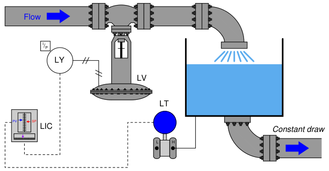
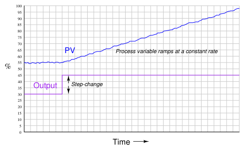
It is critically important to realize that this ramping action of the process variable over time is a characteristic of the process itself, not the controller. When liquid flow rates in and out of a vessel are mis-matched, the liquid level within that vessel will change at a rate proportional to the difference in flow rates. The trend shown here reveals a fundamental characteristic of the process, not the controller (this should be obvious once it is realized that the step-change in output is something that would only ever happen with the controller in manual mode). Mathematically, we may express the integrating nature of this process using calculus notation. First, we may express the rate of change of volume in the tank over time ( dV
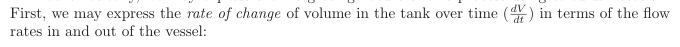
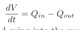
For example, if the flow rate of liquid going into the vessel was 450 gallons per minute, and the constant flow rate drawn out of the vessel was 380 gallons per minute, the volume of liquid contained within the vessel would increase over time at a rate equal to 70 gallons per minute: the difference between the in-flow and the out-flow rates. Another way to express this mathematical relationship between flow rates and liquid volume in the vessel is to use the calculus function of integration:
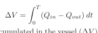
The amount of liquid volume accumulated in the vessel (∆V ) between time 0 and time T is equal
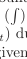
to the sum ( ) of the products (multiplication) of difference in flow rates in and out of the vessel (Qin −Qout) during infinitesimal increments of time (dt).
In the given scenario of a liquid level control system where the out-going flow is held constant, this means the level will be stable only at one in-coming flow rate (where Qin = Qout). At any other controlled flow rate, the level will either be increasing over time or decreasing over time. This process characteristic perfectly matches the characteristic of a proportional-only controller, where there is one unique output value when the error is zero (PV = SP). We may illustrate this by performing a “thought experiment” on the liquid level-control process shown earlier having a constant draw out the bottom of the vessel. Imagine this process controlled by a proportional-only controller in automatic mode, with the bias value (b) of the controller set to the exact value needed by the control valve to make in-coming flow exactly equal to the constant out-going flow (draw). This means that when the process variable is precisely equal to setpoint (PV = SP), the in-flow will match the out-flow and therefore the liquid level will hold constant. If now an operator were to increase the setpoint value (with the controller in automatic mode), it will cause the valve to open further, adding liquid at a faster rate to the vessel. The naturally integrating nature of the process will result in an increasing liquid level. As level increases, the amount of error in the controller decreases, causing the valve to approach its original (bias) position. When the level reaches the new setpoint, proportional-only action will return the controller output to its original (bias) value, thus returning the in-flow control valve to its original position. This return to the bias position makes in-flow once again equal to out-flow, and so the level remains constant at the new setpoint with absolutely no offset (“droop”) even though the controller only exhibits proportional action. Proportional-only offset exists in a self-regulating process because a new valve position is needed to achieve any new setpoint value. Proportional-only offset does not occur on setpoint changes in an integrating process because only one valve position is needed to hold the process variable constant at any setpoint value.
The more aggressive the controller’s proportional action, the sooner the integrating process will reach new setpoints. Just how much proportional action (gain) an integrating process can tolerate depends on the magnitudes of any time lags in the system as well as the magnitude of noise in the process variable signal. Any process system with time lags will oscillate if the controller has sufficient gain. Noise is a problem because proportional action directly reproduces process variable noise on the output signal: too much gain, and just a little bit of PV noise translates into a control valve whose stem position constantly jumps around. Purely integrating processes do not require integral control action to eliminate offset as is the case with self-regulating processes, following a setpoint change. The natural integrating action of the process eliminates offset that would otherwise arise from setpoint changes. More than that, the presence of any integral action in the controller will actually force the process variable to overshoot setpoint following a setpoint change in a purely integrating process! Imagine a controller with integral action responding to a step-change in setpoint for the liquid level control process shown earlier. As soon as an error develops, the integral action will begin “winding up” the output value, forcing the valve to open more than proportional action alone would demand. By the time the liquid level reaches the new setpoint, the valve will have reached a position greater than where it originally was before the setpoint change3, which means the liquid level will not stop rising when it reaches setpoint, but in fact will overshoot setpoint. Only after the liquid level has spent sufficient time above setpoint will the integral action of the controller “wind” back down to its previous level, allowing the liquid level to finally achieve the new setpoint. This is not to say that integral control action is completely unnecessary in integrating processes – far from it. If the integrating process is subject to load changes, only integral action can return the PV back to the SP value (eliminate offset). Consider, in our level control example, if the out-going flow rate were to change. Now, a new valve position will be required to achieve stable (unchanging) level in the vessel. A proportional-only controller is able to generate a new valve position only if an error develops between PV and SP. Without at least some degree of integral action configured in the controller, that error will persist indefinitely. Or consider if the liquid supply pressure upstream of the control valve were to change, resulting in a different rate of incoming flow for the same valve stem position as before. Once again, the controller would have to generate a different output value to compensate for this process change and stabilize liquid level, and the only way a proportional-only controller could do that is to let the process variable drift a bit from setpoint (the definition of an error or offset).
The example of an integrating process used here is just one of many possible processes where we are dealing with either a mass balance or an energy balance problem. “Mass balance” is the accounting of all mass into and out of a process. Since the Law of Mass Conservation states the impossibility of mass creation or destruction, all mass into and out of a process must be accounted for. If the mass flow rate into a process does not equal the mass flow rate out of a process, the process must be either gaining or losing an internal store of mass. The same may be said for energy: all energy flowing into and out of a process must be accounted for, since the Law of Energy Conservation
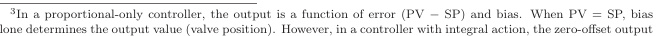
alone determines the output value (valve position). However, in a controller with integral action, the zero-offset output value is determined by how long and how far the PV has previously strayed from SP. In other words, there is no fixed bias value anymore. Thus, the output of a controller with integral action will not return to its previous value once the new SP is reached. In a purely integrating process, this means the PV will not reach stability at the new setpoint, but will continue to rise until all the “winding up” of integral action is un-done.
states the impossibility of energy creation or destruction. If the energy flow rate (input power) into a process does not equal the energy flow rate (output power) out of a process, the process must be either gaining or losing an internal store of energy.
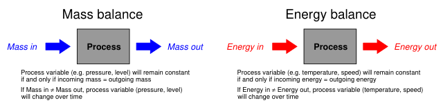
Common examples of integrating processes include the following:
In a self-regulating process, the control element (valve) exerts control over both the in-flow and the out-flow of either mass or energy. In the previous subsection, where liquid flow control was the process example, the mass balance consisted of liquid flow into the valve and liquid flow out of the valve. Since the piping was essentially a “series” path for an incompressible fluid, where input flow must equal output flow at any given time, mass in and mass out were guaranteed to be in a state of balance, with one valve controlling both. This is why a change in valve position resulted in an almost immediate change and re-stabilization of flow rate: the valve exerts immediate control over both the incoming and the outgoing flow rates, with both in perfect balance. Therefore, nothing “integrates” over time in a liquid flow control process because there can never be an imbalance between in-flow and out-flow. In an integrating process, the control element (valve) exerts control over either the in-flow or the out-flow of mass or energy, but never both. Thus, changing valve position in an integrating process causes an imbalance of mass flow and/or energy flow, resulting in the process variable ramping over time as either mass or energy accumulates in (or depletes from) the process.
Our “simple” example of an integrating (level-control) process becomes a bit more complicated if the outgoing flow depends on level, as is the case with a gravity-drained vessel where the outgoing flow is a function of liquid level in the vessel rather than being fixed at a constant rate as it was in the previous example:
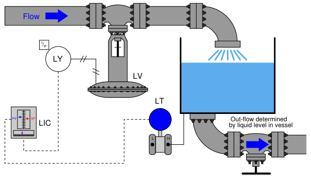
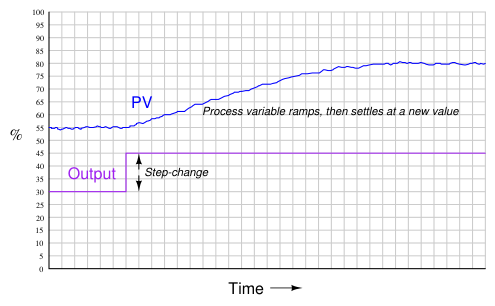
If we subject the control valve to a manual step-change increase, the flow rate of liquid into the vessel immediately increases. This causes an imbalance of incoming and outgoing flow, resulting in the liquid level rising over time. As level rises, however, increasing hydrostatic pressure across the manual valve at the vessel outlet causes the outgoing flow rate to increase. This causes the mass imbalance rate to be less than it was before, resulting in a decreased integration rate (rate of level rise). Thus, the liquid level still rises, but at a slower and slower rate as time goes on. Eventually, the liquid level will become high enough that the pressure across the manual valve forces a flow rate out of the vessel equal to the flow rate into the vessel. At this point, with matched flow rates, the liquid level stabilizes with no corrective action from the controller (remember, the step-change in output was made in manual mode!). Note the final result of letting the outgoing flow be a function of liquid level: what used to be an integrating process has now become a self-regulating process, albeit one with a substantial lag time. Many processes ideally categorized as integrating actually behave in this manner. Although the manipulated variable may control the flow rate into or out of a process, the other flow rates often change with the process variable. Returning to our list of integrating process examples, we see how a PV-variable load in each case can make the process self-regulate:
We may generalize all these examples of integrating processes turned self-regulating by noting the one aspect common to all of them: some natural form of negative feedback exists internally to bring the system back into equilibrium. In the mass-balance examples, the physics of the process ensure a new balance point will eventually be reached because the in-flow(s) and/or out-flow(s) naturally change in ways that oppose any change in the process variable. In the energy-balance examples, the laws of physics again conspire to ensure a new equilibrium because the energy gains and/or losses naturally change in ways that oppose any change in the process variable. The presence of a control system is, of course, the ultimate example of negative feedback working to stabilize the process variable. However, the control system may not be the only form of negative feedback at work in a process. All self-regulating processes are that way because they intrinsically possess some degree of negative feedback acting as a sort of natural, proportional-only control system.
This one detail completely alters the fundamental characteristic of a process from integrating to self-regulating, and therefore changes the necessary controller parameters. Self-regulation guarantees at least some integral controller action is necessary to attain new setpoint values. A purely integrating process, by contrast, requires no integral controller action at all to achieve new setpoints, and in fact is guaranteed to suffer overshoot following setpoint changes if the controller is programmed with any integral action at all! Both types of processes, however, need some amount of integral action in the controller in order to recover from load changes.
Summary: